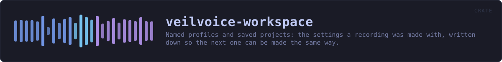

veilvoice-workspace
Named profiles and saved projects: the settings a recording was made with, written down so the next one can be made the same way.
reference · the same page on GitHub
Named profiles and saved projects.
Two things, which sound alike and are not:
- A
Profileis a way of working, a named set of settings you can switch to. "Anonymise one person, as thoroughly as this can." "A group, everybody the same voice." Three are built in and you can save your own. - A
Workspaceis one piece of work: which recording, which plan, who is in it and what they are called, and the profile it was done under. Saved beside the recording, so opening it a week later puts everything back where it was.
Why a project file is worth having here in particular
Setting up a group recording is a dozen small decisions: who is in it, what each is called, what colour each is drawn in, whether they share a voice. Getting halfway through and having to stop is ordinary. Losing all of it because the window was closed is not, and it is worse than usual here, because the recording may be the only copy of something that cannot be made again.
Plain text, and the same shape as a plan
VEILWORK1, then one key value per line. The same format veilvoice-conversation uses for a plan, for the same reasons: it is readable, diffable, greppable, and has no syntax in which something surprising can hide. A project file is a description of your work; it should not require this program to read it.
What a project file does not contain
No audio and no passwords. It records the path to a recording, not the recording, and nothing about how anything is encrypted. A workspace is a thing you might send somebody so they can set their machine up the same way; if it carried a passphrase, sending it would be handing over the recordings too, and people would find that out afterwards.
Speaker names are in it, because the whole point is to put them back, and a name is a name. The file says so.
In plain words
This is the "save my project" and "load my setup" part.
Profiles are named ways of working you can flip between: one for anonymising a single person as thoroughly as possible, one for a group where everybody keeps their own disguised voice, one for a group where everybody sounds identical and only the names tell you who is speaking.
A project file remembers the rest: which recording you were working on, who is in it, what you called them and what colour each one is. Open it next week and everything is where you left it.
It does not contain the recording itself and it does not contain any password. It does contain the names you typed, because putting those back is the point of it.
HOW THE CRATE FITS TOGETHER
Every arrow is a crate:: or super:: path one module actually uses, read out of the source rather than drawn by hand.
The same graph as Mermaid source
%%{init: {"theme":"base","themeVariables":{"background":"#1a1b26","primaryColor":"#1f2335","primaryTextColor":"#c0caf5","primaryBorderColor":"#7aa2f7","secondaryColor":"#16161e","tertiaryColor":"#16161e","lineColor":"#737aa2","textColor":"#c0caf5","mainBkg":"#1f2335","nodeBorder":"#7aa2f7","clusterBkg":"#16161e","clusterBorder":"#2f3549","fontFamily":"ui-monospace, SFMono-Regular, Consolas, monospace","fontSize":"14px"}}}%%
flowchart TD
n_lib(["lib.rs<br/>819 lines"])
click n_lib href "https://github.com/tilas01/veilvoice/blob/main/crates/veilvoice-workspace/src/lib.rs" "open the source"This site loads no third-party script, so it cannot run Mermaid; the diagram above is the same nodes and edges drawn by the generator instead. GitHub renders the source below directly.
THE FILES
| File | Lines | What it is |
|---|---|---|
lib.rs | 819 | Named profiles and saved projects. |